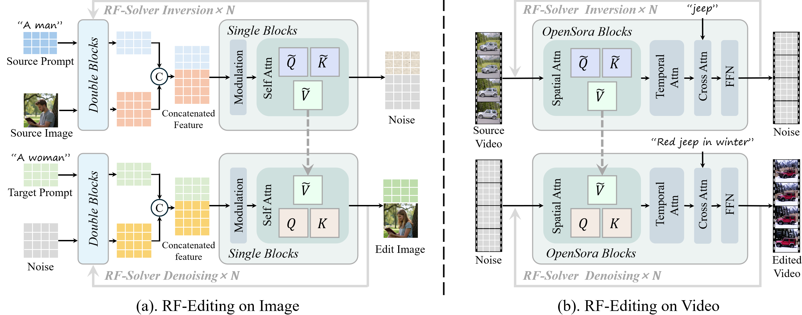
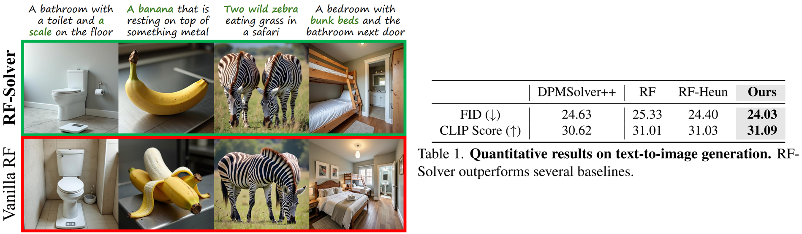

Taming Rectified Flow for Inversion and Editing
Jiangshan Wang1,2
Junfu Pu2
Zhongang Qi2
Jiayi Guo1
Yue Ma3
Nisha Huang1
Yuxin Chen2
Xiu Li1
Ying Shan2
1 Tsinghua University 2 Tencent ARC lab 3 HKUST
[Paper]
[arXiv]
[Code]
[🤗Demo]
[ComfyUI]
We propose RF-Solver to solve the rectified flow ODE with reduced error, thereby enhancing both sampling quality and inversion-reconstruction accuracy for rectified-flow-based generative models. Furthermore, we propose RF-Edit, which utilizes the RF-Solver for image and video editing tasks. Our methods demonstrate impressive performance across generation, inversion, and editing tasks in both image and video modalities.
Contributions
- We propose RF-Solver, a training-free sampler that significantly reduces errors in the inversion and reconstruction processes of the rectified-flow model.
- We present RF-Edit, which leverages RF-Solver for image and video editing, effectively preserving the structural integrity of the source image/video while achieving high-quality results.
- Extensive experiments on images and videos demonstrate the efficacy of our methods, showcasing superior performance in both inversion and high-quality editing compared to various existing baselines.
RF-Solver
The vanilla rectified flow (RF) sampler demonstrates strong performance in image and video generation. However, when applied to inversion and reconstruction tasks, we observe significant error accumulation at each timestep.
This results in reconstructions that diverge notably from the original image, further limiting the performance of RF-based models in various downstream tasks, such as image and video editing.
Delving into this problem, we notice that the inversion and reconstruction processes in rectified flow rely on estimating an approximate solution of the rectified flow ODE at each timestep.
Obtaining more precise solutions for the ODE would effectively mitigate these errors, leading to improved reconstruction quality. Based on this analysis, we propose RF-Solver Algorithm.
RF-Edit
The proposed RF-Edit framework enables high-quality editing while preserving structural information.
Building on this concept, we design two sub-modules for RF-Edit, specifically tailored for image editing and video editing.
For image editing, we use FLUX as the backbone.
For video editing, we employ OpenSora as the backbone.

Text-to-Image Generation

We compare the performance of our method with the vanilla rectified flow on the text-to-image generation task.
Both the quantitative and qualitative results demonstrate the superior performance of RF-Solver in fundamental T2I generation tasks, producing higher-quality images that align more closely with human cognition.
Inversion and Reconstruction

RF-Solver effectively reduces the error in the solution of RF ODE, thereby increasing the accuracy of the reconstruction.
The image reconstruction results using vanilla rectified flow exhibit noticeable drift from the source image, with significant alterations to the appearance of subjects in the image.
For video reconstruction, the baseline reconstruction results suffer from distortion.
In contrast, RF-Solver significantly alleviates these issues, achieving more satisfactory results.
Image Stylization
Our method illustrates impressive performance on image stylization, effectively generating images that are well-aligned with the reference style.
Image Editing
We compare the performance of our methods with several baselines across different types of editing and Stylization.
The baseline methods often suffer from background changes or fail to perform the desired edits.
In contrast, our methods demonstrate satisfying performance, effectively achieves a balanced trade-off between the fidelity to the target prompt and preservation of the source image.
To be noticed, although RF-inversion also uses the rectified flow model for image editing (third row), the structure of the source image which is unrelated to editing prompt (such as background and human appearance) is modified obviously.
Video Editing
For video editing, we primarily evaluate the performance of our methods on long videos (200 frames) and high-resolution videos.
Furthermore, we assess the performance on complicated videos and prompts where there are multiple objects in the video, and the user has different editing requirements for each object.
Our method successfully handles complicated editing cases (e.g., modifying the leftmost lion among three lions into a white polar bear and changing the other two small lions into orange tiger cubs), whereas all other baseline methods fail in this scenario.
Our method also demonstrates strong performance in global editing tasks, such as transforming scenes into autumn.
BibTex
@article{wang2024taming,
title={Taming Rectified Flow for Inversion and Editing},
author={Wang, Jiangshan and Pu, Junfu and Qi, Zhongang and Guo, Jiayi and Ma, Yue and Huang, Nisha and Chen, Yuxin and Li, Xiu and Shan, Ying},
journal={arXiv preprint arXiv:2411.04746},
year={2024}
}